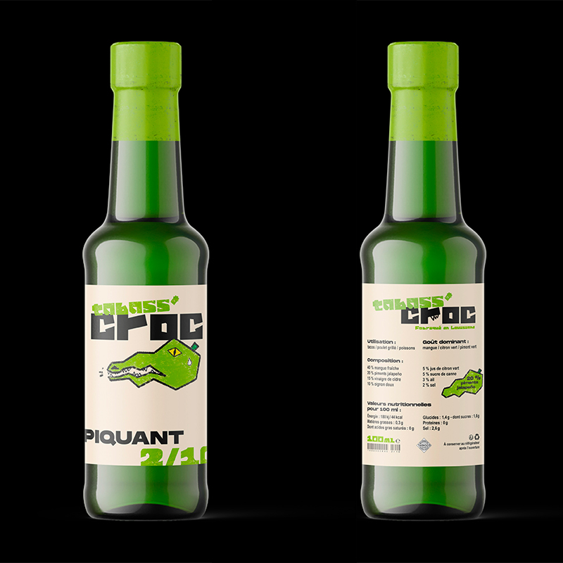
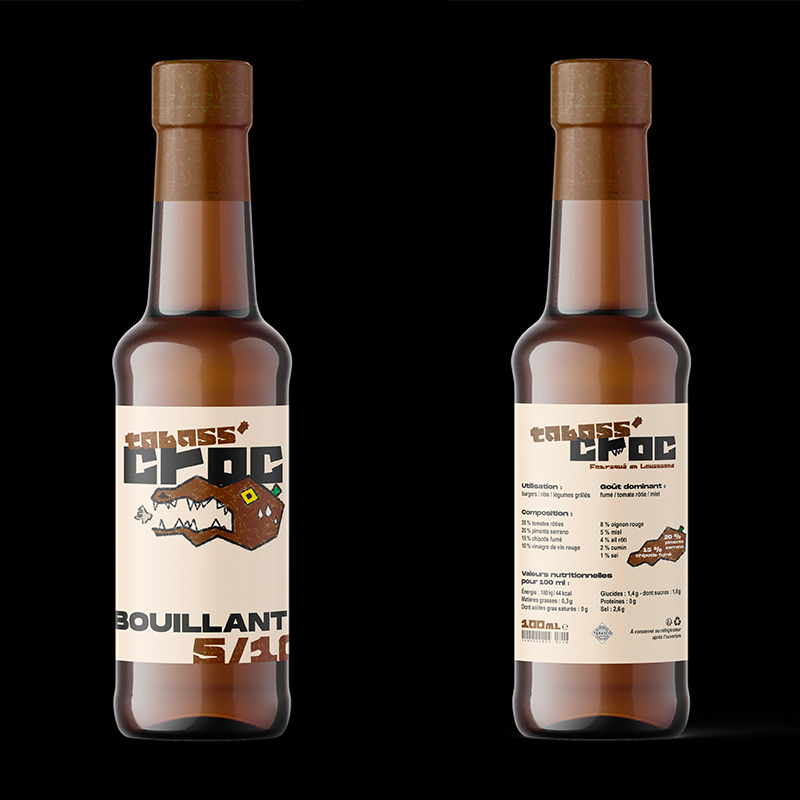
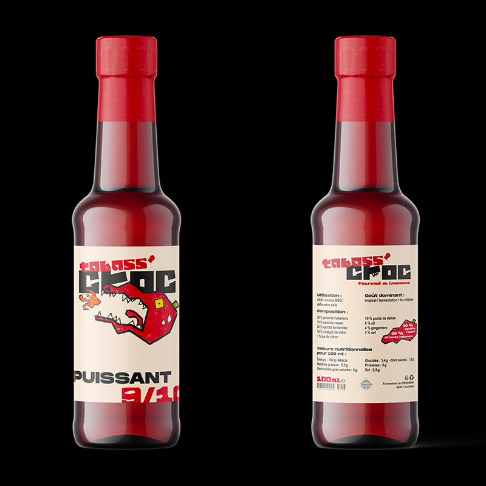
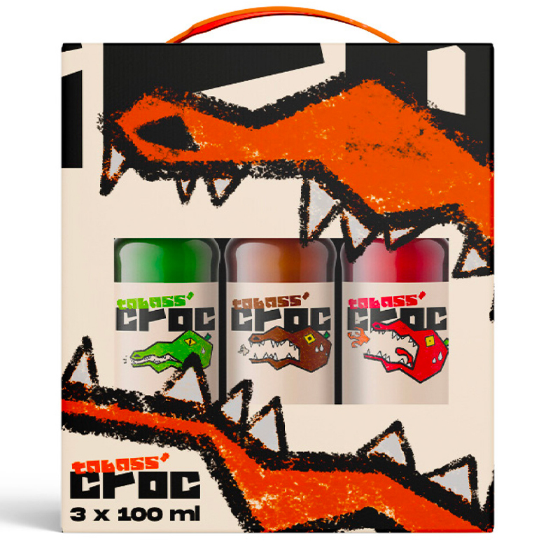
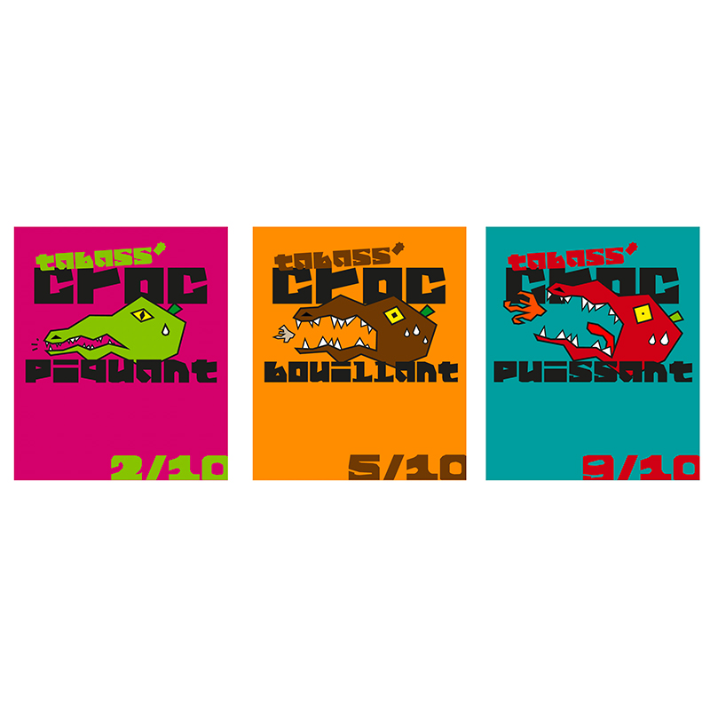
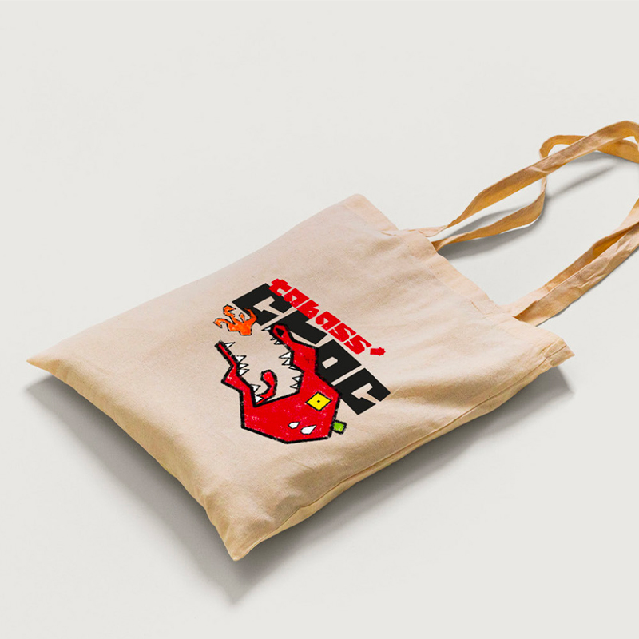
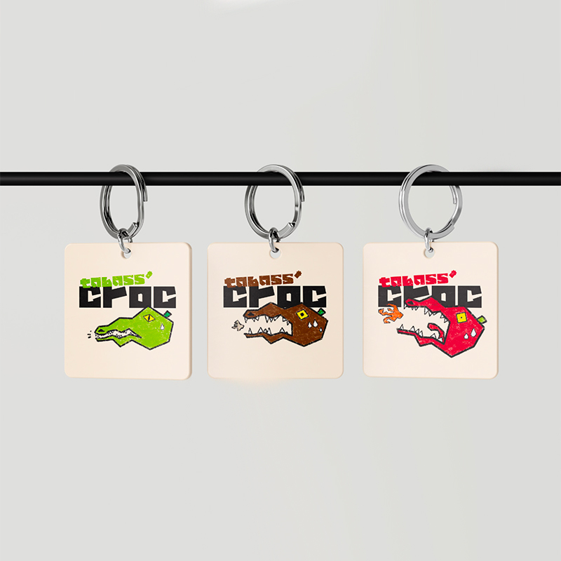
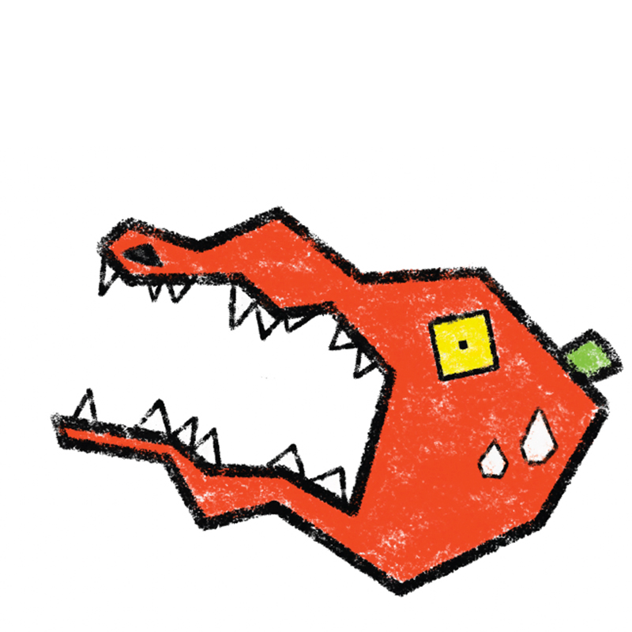

Tabass’ Croc
Packaging
2026
Projet d’identité visuelle / packaging : réalisation d’une édition limitée - pack de 3 nouvelles sauces tabasco.
Création d’un logotitre : jeu de mot avec le nom de la marque et analogie de forme - piment et alligator, en lien avec la Louisiane; et typographie à l’aspect «brut» et fort.
Sauces destinées aux amateurs de sensations forte et aux curieux ; design illustrant des saveurs originales et intenses - sur un ton décalé, provoquant et drôle.
Réalisation finale : 3 étiquettes différentes alliant humour et découverte, représentant les 3 niveaux de piquant des sauces - évolution crescendo de l’alligator + changement de couleurs significatif.







